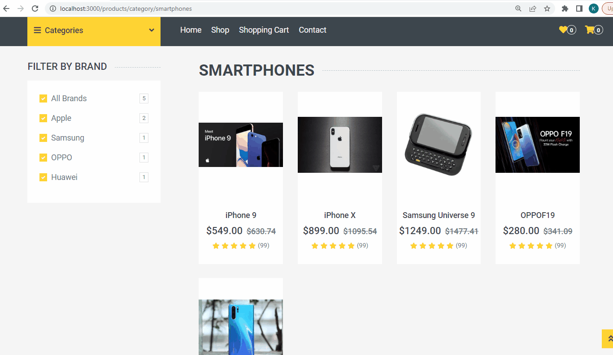
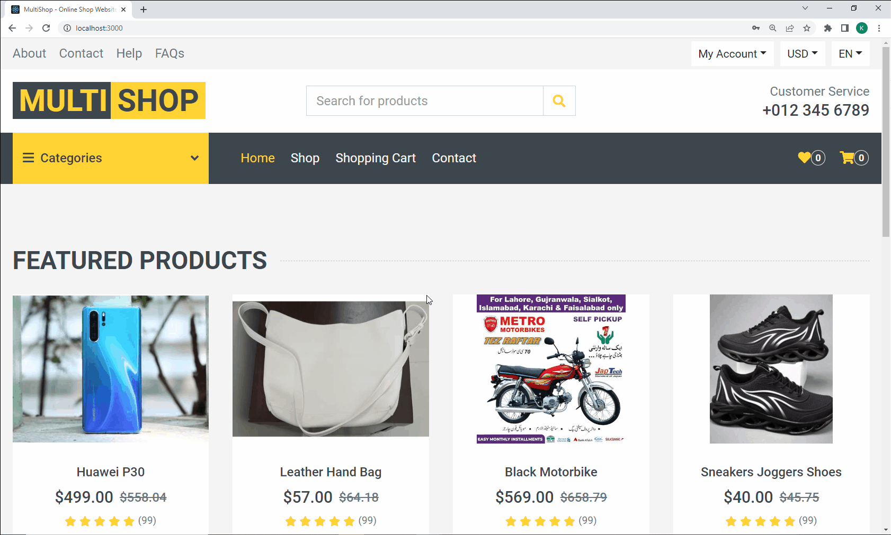

IS 5750/6750
Spring 2026
Final Exam
Instructions – READ CAREFULLY!!!! - This is a take-home exam and is an individual effort; you may NOT collaborate in any way with other people. This includes not viewing/sharing answers in any form with current or former students. Any violation of academic integrity will result in a failing grade.
- You may refer to the textbook, class assignments, online resources, or the instructor for help in answering the questions. However, your answers must be in your own words/code, particularly for questions that ask for descriptions or explanations. Small snippets of code may be used from online sources for basic tasks (e.g., sorting an array); however, wholesale copying from the textbook, the web, or any other source, even with minor modifications, is plagiarism, and will result in a failing grade.
- This exam requires a significant time investment (estimated 1-hour per question assuming you understand the material). START EARLY and move through the questions in sequential order.
- BE SURE TO SAVE YOUR FILES FREQUENTLY AND BACK THEM UP!! Lost data is not a valid excuse for failing to submit your work on time. Avoiding data loss is solely your responsibility.
- Turn in your exam by zipping your exam directory and submitting it to Canvas by the due date. To save space, do NOT include the node_modules folder (but make sure the package.json file contains a list of all application dependencies). Make sure you have run all the code to verify that it works.
- HAPPY CODING!!!
|
For this exam, you will continue developing the MultiShop application started in the midterm exam. If you successfully completed all required code for the midterm exam, you should start with your own version of the Multi-shop app. Otherwise, you can download the starting application here:
multishop_final_starting_vite.zip
The following resources from the midterm exam will also be useful:
Throughout the exam, where you are asked to create new components from the html template files, remember to take all necessary steps to convert the HTML into JSX, including:
- Change class= to className=
- Close any self-closing elements (e.g., <img>, <input>) with />.
- Modify any inline styles to use the JavaScript style names (camel case) and object notation (e.g.,
style="width: calc(100% - 30px); z-index: 999;" → style={{width: `calc(100% - 30px)`, zIndex: 999}})
- Change other multi-word attribute names to camel case if warned in the browser console.
- Remove any HTML comments (or comment them out with JavaScript/JSX comment syntax)
- (Optional): In hyperlinks, replace href=”” and href=”#” with href=”/” (this will prevent you from getting warnings about invalid links when running the app.)
- Routing Part 1. Implement routing in the MultiShop app using the react-router package. Start by implementing the following:
- Add a pages subdirectory in the src directory that will hold page components. Create the following page components that correspond to the routes currently implemented by the switch/case statement in App.js:
- HomePage (/)
- CategoriesPage (/categories)
- ProductsByCategoryPage (/products/category/:categoryname)
- ProductDetailPage (/products/:productid)
- Move all necessary components from the App component switch/case statement into the respective page components.
- Replace the switch/case statement with routes for each of the paths above that point to the respective page components.
- Add an errorElement to the root route that will handle all unrecognized requests and return a paragraph stating the page could not be found.
- For the ProductsByCategoryPage and the ProductDetail page, implement the necessary code to retrieve the parameter value from the path parameter and pass it as a prop to the necessary child components.
- Routing Part 2. In this step, implement link navigation using the NavLink and Link elements provided by react-router. Specifically:
- For the main site navigation menu in the NavBar component, remove the ShopDetail and Checkout navigation links. The navigation links that remain should include Home (/), Shop (/categories), Shopping Cart (/cart), and Contact (/contact). Make all these top-level links (remove the Pages Dropdown menu item).
- Replace the <a> elements that remain in the NavBar component with NavLink components. Ensure that the link for the active page is formatted in yellow text (as shown in the Home link on the template).
- Replace all the functional <a> elements that have been implemented elsewhere in the application with Link components. This includes:
- Links to the ProductsByCategory page in the CategoryMenu and CategoryList components
- Link to the ProductDetailPage in the ProductTile component
- Firebase backend and data access configuration. In this step, you will create a Firebase backend app that will be used for authentication and storing other app data. You will also create a custom Axios instance to send queries to this backend, and set up the application to report the status of requests. Do the following:
- Sign in to Firebase and create a new project called [lastname]-multi-shop, where [lastname] is your last name (e.g., pita-multi-shop). You can disable Google Analytics for the project and Gemini. In this project, set up a new Realtime Database. On the “Security Rules” page of the setup wizard, choose “Start in test mode” to enable open read/write access. (Note: As an alternative, you can also choose to set up a Firestore database instead - however, querying this database is a little more complicated.) To facilitate grading, add me as a member of the firebase project by by doing the following:
- Click the gear icon next to the “Project Overview” menu item (upper left) and choose “Users and Permissions”
- Click “Add member” and then add toa.pita@gmail.com as a viewer to the project
- If it does not already exist, add a /utils directory inside the /src directory of the application. In this directory, create a db.js file that defines a custom Axios instance with the baseURL set to the url of your Firebase instance (don’t worry about setting other configuration parameters). Export this custom instance as the default export of this file. This custom instance will be used to perform data operations in subsequent questions.
- In the Layout component, use the useNavigation hook to provide an indication to the user when the application is in a “loading” or “submitting” state. Implement a visual graphic using the react-loader-spinner package (you choose which loader image to display).
- ContactPage. Implement the contact request form shown in the contact.html page of the template by doing the following:
- Create a ContactPage component in the /pages directory of the application. Start by copying all the content between the <!-- Contact Start –> and <!-- Contact End –> comments in the contact.html template page into this page component. Take the necessary steps to update the HTML to proper JSX code.
- Create a Contact directory in the /components directory. In this directory, create a ContactForm component. Move the JSX for the contact form (<div className=”col-lg-7 mb-5”> and all its contents) from the ContactPage into the ContactForm component. Change the regular form element to a Form element (from react-router). Then, replace this code with an instance of the ContactForm component in the ContactPage. (Note: In the form itself, change the novalidate="novalidate" property to noValidate={false}. This will enable basic HTML form validation for the input fields.)
- In the /components/Contact directory, create a Location component. Move the JSX for the Google map and address parts of the page (<div className=”col-lg-5 mb-5”> and all its contents) into this Location component. Replace this code with an instance of the Location component in ContactPage. (Note: Be sure to update the multi-word attributes of the iframe, such as frameborder and allowfullscreen, to their Javascript camel-case equivalents: e.g., frameBorder, allowFullScreen, etc.)
- Add the necessary routing code to render the ContactPage when the user clicks the Contact link in the main navigation menu.
- In the ContactPage component, write a react router action function that uses the custom Axios instance to send a post request to “contacts.json” with the form data in the body of the request. The action should return the data from the request if the post was successful, or return an error message. If successful, the ContactPage component should display a success message to the user informing them of the ID of their contact request (i.e., the ID generated by firebase). Otherwise, the ContactPage component should tell the user an error occurred and provide the error message.
- Product Brand Filter. The page that shows products by category includes a ProductSidebar component with a series of (currently non-operational) checkbox fields for filtering products by price, size, etc. For this question, implement only one such filter that allows the user to filter the displayed products by brand (delete or comment out the other filters). Specifically, the component should:
- Display a checkbox for each brand that exists for products within the category, along with a count of the number of products belonging to that brand.
- Display an “All Brands” checkbox that selects/de-selects all brands, along with a count of the total products across all brands. If the user de-selects at least one of the individual brands, the “All Brands” checkbox should be de-selected. Likewise, if all brands are selected individually, the “All Brands” checkbox should be selected.
- When the page first loads, the “All Brands” checkbox and each individual brand checkbox should be selected. When the user checks or unchecks any box, the product tiles shown should be filtered accordingly as shown in the image below:

Hint: Consider moving the code that retrieves products from context out of the ProductsByCategory component and into the hosting page component. This page component can then manage state and pass the necessary data to ProductSidebar and ProductsByCategory via props.
- Authentication Setup. For this question, set up your project for authentication by doing the following:
- In the Firebase console, enable email/password authentication in your Firebase backend app.
- Create a SignUpForm component that displays an HTML form with input fields for first name, last name, email, and password, along with a submit button (you can copy the ContactForm component as a starting point). Use the Form element from react-router so that form values can be retrieved later by an action function. Be sure to add name attributes to each form input field.
- Create a SignUpPage page component that displays the SignUpForm component along with any necessary surrounding code (use the ContactPage as a template). Add a route in the App component that renders this component when a request is sent to the /signup path.
- Create a LoginForm component that displays an HTML form with input fields for email and password, along with a submit button (you can copy the SignUpForm as a starting point). Use the Form element from react-router so that form values can be retrieved later by an action function. Be sure to add name attributes to each form input field.
- Create a LoginPage component that displays the LoginForm component along with any necessary surrounding code (use the SignUpPage as a template). Add a route in the App component that renders this component when a request is sent to the /login path.
- The TopBar component (in the /Layout directory) contains a “My Account” dropdown menu that contains dummy buttons to sign up or sign in. Change these buttons to Link components and that point to the /signup and /login paths, respectively. Clicking on these links should render the Signup and Login pages.
- Authentication Functionality. Implement the following to complete the authentication functionality:
- In the /utils directory, add a new file called auth.js. This file will export a series of functions (including route loader and action functions) that will be used to perform authentication operations. Implement the following in this file:
- async function sendAuthRequest(email, password, endpoint): A private (non-exported) async function that uses Axios to send either a signUp or signInWithPassword post request (depending on the value received for the endpoint parameter) to the Google Firebase authentication API. The function should include in the body of the request the email and password passed in, along with the required returnSecureToken value. The function should return the response it receives from the Firebase API.
- export async function signupAction({ request }): An exported async function that retrieves the data form the SignUpForm component and uses the sendAuthRequest function to send a signUp request to the Firebase auth API. If the response succeeds, the function should:
- Calculate an expiration date/time based on the value of expiresIn returned by the Firebase auth API (this represents the number of seconds until the token expires).
- Constructs a new userData object that consists of the following property/value pairs: firstname, lastname, email, localId, token, expiration. (Hint: some of these come from the form data, and some come from the Firebase auth API response, including the idToken and a localId field that contains the id of the created user.)
- Saves the userData object generated in the previous step in a localStorage variable called userData (Note: Be sure to convert the object to JSON before saving in localStorage).
- Uses the db.js utility file created previously to write a new user record to the application’s Realtime database. This record should include the user’s first name, last name, email, and user id. (Hint: Instead of sending a POST request to /users.json, which causes Firebase to generate its own random id for the record, send a PUT request to /users/[user id].json, where [user id] is the localId of the user. This will create a new record with the same user id generated by the Firebase auth API.
- Redirect the user to the same path they were on before signing up.
If any error is generated during the steps above, the function should catch the error and return it.
- export async function loginAction({ request }): Similar to the signupAction, an exported async function that retrieves the data form the LoginForm component and uses the sendAuthRequest function to send a signInWithPassword request to the Firebase auth API. If the response succeeds, the function should:
- Calculate an expiration date/time based on the value of expiresIn returned by the Firebase auth API (this represents the number of seconds until the token expires).
- Uses the db.js utility file created previously to retrieve the user’s record from the application’s Realtime database. (Hint: Send a GET request to /users/[user id].json, where [user id] is the localId of the user retrieved from the Firebase auth API.)
- Constructs a new userData object that consists of the following property/value pairs: firstname, lastname, email, localId, token, expiration. (Hint: some of these come from the Realtime database record, and some come from the Firebase auth API response, including the idToken and a localId field that contains the id of the created user.)
- Saves the userData object generated in the previous step in a localStorage variable called userData (Note: Be sure to convert the object to JSON before saving in localStorage).
- Redirect the user to the same path they were on before logging in.
If any error is generated during the steps above, the function should catch the error and return it.
- export function logoutLoader(): An exported function that removes the userData variable from localStorage and redirects the user to the home page.
- export function authStatusLoader(): An exported function that retrieves the userData variable from localStorage, parses it from JSON into a JavaScript object. If the expiration date in the userData has passed, redirects to /logout. Otherwise, returns the userData object.
- In the App component, modify the route for the root (/) path to designate the authStatusLoader as the loader for this route. (This will make auth status available to all child routes). Modify the routes for the /signup and /login paths to designate the signupAction and loginAction functions as the action functions for these routes. In the SignUpPage and LoginPage components, retrieve any error data returned by these action functions and report the error message(s) to the user on the page.
- In the App component, add a new /logout route that will allow the user to logout. This route will not have an element to render, but should use the logoutLoader function as its loader.
- In the TopBar component, retrieve the userData from the loader of the root (parent) route.
- If the user is not currently logged in (i.e., userData is null), the Sign In and Sign Up links should be displayed.
- If the user is currently logged in (i.e., userData is not null), a Sign Out Link should be displayed. Clicking this link should direct the user to “/logout”. In addition, if the user is currently logged in, the “My Account” text in the dropdown menu should be replaced with “Welcome, [first name]!”, where [first name] is the first name of the user.
- Shopping Cart Context. For this question, begin implementing the shopping cart functionality. As several components will need access to shopping cart data, this data will be managed by a new context that will set/retrieve it in the browser sessionStorage and make it available to other components. Create a cart-context.js file that stores a CartContext context object and a CartContextProvider custom provider component.
- The CartContextProvider should return the following in the as the value for the context:
- Variables:
- items: a state variable that stores an array of items in the cart. Each item should be an object that includes the product id, title, price, thumbnail image, and quantity ordered.
- numItems: the number of unique items in the cart
- subtotal: the subtotal in dollars for all items in the cart (price * quantity)
- shipping: calculate as 10% of subtotal
- total: subtotal + shipping
- Functions:
- addItem(item): Adds a new item to the items array, including all of the object fields listed above, if the item with the id does not already exist in the cart. If an item with the id already exists in the array, increments the item quantity by the quantity in the passed-in item. Sets items to the updated array and stores the array in the browser sessionStorage.
- removeItem(itemId): Removes the item with the specified ID from the items array. Sets items to the updated array and stores the array in the browser sessionStorage.
- updateItemQuantity(itemId, newQuantity): Updates the quantity of the item with the specified ID to the specified new quantity. Sets items to the updated array and stores the array in the browser sessionStorage.
- resetCart(): Sets items to an empty array and removes the array from the browser sessionStorage.
- When the CartContextProvider first loads, it should check sessionStorage for any existing cart data. If such data exists, it should set the items state variable to this data. Otherwise, sets it to an empty array.
- Wrap all components in the application (including the app component) in the CartContextProvider so they have access to Cart data (Hint: Go to the main.jsx file and import the CartContextProvider there. Then wrap the <App /> component with this provider)
- Shopping Cart Interface. Implement the following to enable the shopping cart interface (shown in the image below):
- In the ProductDetail component, the user should be able to enter a quantity to order and click the ‘Add to Cart’ button. (Hint: the yellow increment and decrement buttons likely do not work. You can delete these buttons and change the type of the <input> element to type=”number” and add a min=”1” attribute as well. This will create increment/decrement arrows in the textbox itself). Clicking ‘Add to Cart’ should call the addItem context function, passing in the product data as an object, including the quantity entered by the user.
- In the ProductTile component, when the user hovers over a tile, an overlay with four links appears, one of which is a cart icon. When the user clicks this link, it should add the product to the cart with a quantity of 1. (Hint: Change the <a> to a <Link> to avoid a refresh when this link is clicked).
- On the right side of the NavBar component is a small widget showing a cart icon and a number of items in a circle. Modify this widget to show the number of unique items in the cart. Clicking on this widget should navigate the user to “/cart”.
- Add a new /Cart directory in the /components directory. In this directory, create a new Cart component in Cart.js that will display the shopping cart. The content for this component should be taken from the cart.html file in the template. Note the following:
- The component should show all the items in the cart, along with the quantities for each item in editable textboxes.
- The right side should show a summary of the cart amounts, including subtotal, shipping and total.
- The user should be able to update the quantity and/or delete an item from the cart. These events should call the appropriate context methods to update the cart. When any change is made, the cart summary should update accordingly.
- If there are no items in the cart, a message should be displayed that tells the user there are no items and provides a link to /categories for shopping.
- The yellow Checkout button should appear only if the user is logged in. If the user is not logged in, a message should be displayed instead with links for the user to sign up or log in.
- Add a ShoppingCartPage page component that renders the Cart component. Add necessary routing to render this component when the requested path is /cart.

- Checkout. For this question, implement the checkout functionality. For this application, the checkout operation will simply save the order data to the database (no actual payment will be processed, other than saving the payment type). Do the following:
- In the /Cart directory, create a CheckoutForm component that contains the content of the Checkout.html page in the template. You may choose to implement the checkout form as a single component or as multiple separate components.
- Create a CheckoutPage component that renders the CheckoutForm component. Modify the “Proceed to Checkout” button on the Cart page to navigate the user to /checkout. Add necessary routing to render this page when this path is requested.
- When the user fills out the CheckoutForm and clicks “Place Order”, an action should be triggered that posts a new order object to the app Realtime Database at /orders.json. This object should consist of the following information (You may structure it as you like - just make sure it includes the following):
- UserID: The ID of the logged-in user
- BillingInfo: The billing info for the order
- ShippingInfo: The shipping info for the order (should be copied from BillingInfo if no shipping info is provided)
- Items: The items on the order (from the cart)
- Subtotal: The subtotal amount
- Shipping: The shipping amount
- Total: The total amount
- OrderDate: The current date
- OrderStatus: Set to “pending”
Hint: To access the shopping cart data from the context in the action function, try wrapping the action function in an outer function that receives the context as a parameter, as shown here.
- Choose your own adventure! For this question, implement one of the following functionalities. (Or earn extra credit by doing more than one!) Add a markdown file called Question11.md to your project and identify which functionality you chose to implement.
- Convert Shopping Cart Context into Redux. Convert Shopping Cart Context into Redux. All functionality should match the listed functionality above. Choosing this option counts twice. You will get credit for Question 11 and extra credit for Question 11.
- Product Search. Implement the product search functionality. When a user enters a search term in the search field in the TopBar component, the app should show all products that contain this term in either the title, description, brand, or category. The results should be displayed on a page similar to the page that shows products by category (it should show a series of product tiles for products matching the search, and these tiles should be filterable by brand).
- Order List. Implement functionality to allow a logged-in user to view their orders. A ‘My Orders’ link should appear in the navigation menu only when a user is logged in. Clicking this link should render a page that shows a summary list of orders placed by the user. Clicking on one of the orders should show the full detail for that order.
- Product Reviews. Implement functionality to allow a logged-in user to leave a product review. On the ProductDetail component, the form for submitting a review should be available only to logged-in users, and the name and email fields should be auto-filled with the name and email of the logged-in user. When the user submits a review, the review data should be posted to the RealTime database, including the review text, the id of the user, the id of the product, and the date (don’t worry about the star ratings or user images). (Hint: Post a new record to the path /reviews/[product id].json, where [product id] is the id of the product being reviewed.) When the ProductDetail component is loaded (whether or not the user is logged in), all reviews for the product should be displayed.
- Deploy! After making sure your app is running properly, deploy your app to Firebase by following the steps outlined in Chapter 23. Implement lazy loading for all page components except for the HomePage and Layout. In your project files, add a markdown file called Question12.md that contains the public URL of your project.
THE END!!
Deep Thought By Jack Handey
“Sometimes I think you have to march right in and demand your rights, even if you don’t know what your rights are, or who the person is you’re talking to. Then on the way out, slam the door.”
|